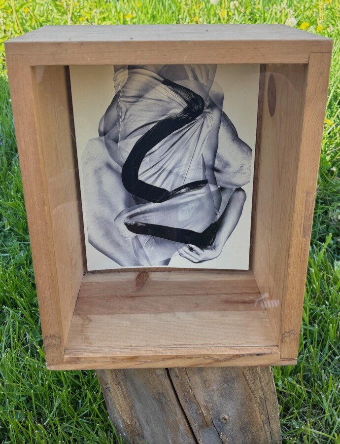

Regin Igloria: Mid-day Meditations for May
Regin Igloria
Mid-day Meditations for May
Solo Exhibition – Cultivator at Bray Grove Farm
Memorial Day, Monday, May 25, 2026, 2-5pm
Cultivator is pleased to present Regin Igloria’s exhibition Mid-day Meditations for May during Bray Grove Farm’s Spring Farm Day. This exhibition coincides with Karen Azarnia’s exhibition with Cultivator.
Please rsvp to join us on Memorial Day, Monday, May 25th from 2-5pm for art, conversation, light refreshments, and an afternoon on our small holistic farm. You can drop in anytime between 2-5pm. We are tentatively scheduling a short tour of the farm with Brian and Joanne at 3pm. Bray Grove Farm is located 70 miles southwest of Chicago in Grundy County. To confirm your attendance and receive directions and parking information, kindly email joanne@cultivatorarts.com.
Regin Igloria presents a series of site-specific dioramas reflecting on his relationship to a moving landscape. The works depict moments within a timeframe of tumult and peace using collage and digital images. In addition, a portion of his Spider Plant Farm and Hospital will be featured.
He writes “The plants come from one original parent plant that my mother had given me; one of many (including a Christmas cactus, a Sansevieria, an Easter Lily, and a few others) that have followed me to various places I’ve lived.